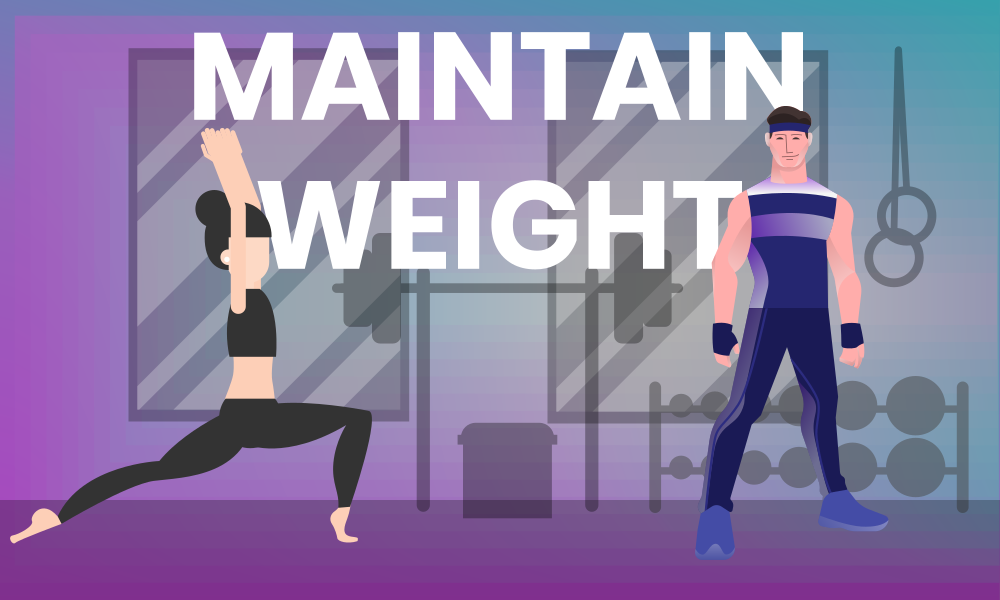

<div class="adjustment">
    <div class="card card-cascade narrower">
  
    <!-- Card content -->
    <div class="card-body card-body-cascade text-center">
  
      <!-- Card image -->
      <div class="view view-cascade overlay waves-light" mdbWavesEffect>
          
          <a>
            <div class="mask rgba-white-slight"></div>
          </a>
      </div>
  
      <br><br>
  
      <h2 class="card-title">MAINTENANCE CALCULATOR</h2>
      <hr>
      <h4>Hi {{caldata.name}}! </h4>
      <span class="card-text sizeup">Your <b> Basal Metabolic Rate (BMR)</b>-</span>  
      <br>
      <h4 class="highlights">{{caldata.bmr | number: '1.0-0' }} Cals</h4>
      <br>
  
        <button class="btn btn-outline-info waves-light accordbtn" type="button" (click)="bmr.toggle()" mdbWavesEffect>
            What is BMR? What does that mean?
        </button>
  
        <div class="accordcontent" [mdbCollapse]="isCollapsed" #bmr="bs-collapse">
            <p>
              BMR (Basal Metabolic Rate) is an estimate of how many calories you'd burn if you were to do nothing but rest for 24 hours. It represents the minimum amount of energy needed to keep your body functioning, including breathing and keeping your heart beating.
              <br>
                Your BMR does not include the calories you burn from normal daily activities or exercise.</p>
        </div>
        <br>
        <hr>
        <span class="card-text sizeup">Your <b>Maintainance Calories</b>-</span>  
        <br>
        <h4 class="highlights green-text">{{caldata.maintenance | number: '1.0-0' }} Cals</h4>
        <br>
  
        <button class="btn btn-outline-info waves-light accordbtn" type="button" (click)="maintenance.toggle()" mdbWavesEffect>
            What are Maintenance Calories?
        </button>
  
        <div class="accordcontent" [mdbCollapse]="isCollapsed" #maintenance="bs-collapse">
            <p>
              Maintenance Calories are the amount of energy needed by your body to maintain current bodyweight.
              <br>
              The depend on various factors such as- </p>
              <ul>
                <li> BMR (basal metabolic rate) </li>
                <li> NEAT (non-exercise activity thermogenesis) </li>
                <li> Exercise </li>
              </ul>
              <p>Our calculator estimates your maintenance level on the basis of stats you provided us in Profile section.
             </p>
        </div>
  
        <br>
        <div *ngIf="!caldata.goalerrormsg">
        <hr>
            <span class="card-text sizeup">Your Macronutrient Goal for <b>Maintenance</b>-</span> 
            <br><br>
            <div *ngFor="let macro of caldata.macroarray; let i = index"> 
                <h4 class="macroupper">Option {{i+1}} -{{macro.name}}</h4>
  
                <div class="table-responsive">
                    <table class="table table-hover" >
                        <thead class="text-white" [ngClass]="'gradient'+(i+1)">
                            <tr>
                                <th>Protein</th>
                                <th>Carbohydrates</th>
                                <th>Fats</th>
                            </tr>
                        </thead>
                        <tbody>
                            <tr>
                                <td>{{macro.pmacro | number: '1.0-0'}} gms</td>
                                <td>{{macro.cmacro | number: '1.0-0'}} gms</td>
                                <td>{{macro.fmacro | number: '1.0-0'}} gms</td>
                            </tr>
                        </tbody>
                    </table>
                  </div>
                  <hr>
            </div>
            <br>
  
            <span class="card-text"><b>EXPLANATION:</b> There are three options for Macronutrients' goal. You can choose any one of them according to your choice.
              For example: I like to eat more carbs than compared to fats, then I will go for High Carb Low Fat option.
                Since all of the above Macronutrients equate to same amount of calories, Guess what? Results will be same on any of the selected option!
            </span>  
  
          <hr>
          <span class="card-text"><b>WHY IS PROTEIN SAME IN ALL THREE OPTIONS?</b> <br>
            Based on our database your level of experience is <b>{{caldata.experience}}</b>. 
            The Protein intake is based on standards defined for your experience level.
          </span>  
          <hr>
  
          <span class="card-text sizeup">Cardio sessions per week-</span>  
          <br>
          <h4 class="highlights deep-purple-text" >{{caldata.cardio }} Session 🏃</h4>
          <br>
  
          <span class="card-text"><b>EXPLANATION:</b> 
            Cardio sessions can last anywhere between 10-20 minutes based on your ability. 
            You can do any form of cardio you like (JOGGING, SWIMMING, CYCLING, PLAYING OUTDOOR GAMES, etc)
            All of these activities elevate your heart rate and promote fat loss.
          </span>  
          <hr>
          <span class="card-text"><b>WHY {{caldata.cardio }} Session on Maintenance?</b> <br>
            Cardio is essential for overall health and can help you recompose your body. i.e. to lose fat and gain muscle simultaneously.
            Cardio goal is based on your current goals and activity level (Lifestyle).
            As per our database your current goal is to <b> {{caldata.goal}}</b> and Lifestyle is <b> {{caldata.lifestyle}}</b>
          </span>  
        <br>
        <hr>
  
        <span class="card-text"><b>IMPORTANT NOTE:</b>
          Track your bodyweight on every alternate days and update it in profile. 
          Our algorithms will recalculate the updated caloric and macronutrient goals as you progress. 
          Track your progress in form of pictures and measurements as well.
        </span>  
      <br>
  
        </div>
  
        <div *ngIf="caldata.goalerrormsg">
            <span class="card-text">According to our database, your current goal is set to <b>{{ caldata.goalerrormsg }}</b></span> 
            <br> 
            <span class="card-text">If you wish to check your Weight gain calories consider changing your goal in Profile :)
               <br> <button routerLink="../../../dashboard/profile" class="btn btn-outline-primary btn-rounded errorbtn" mdbWavesEffect><i class="fa fa-edit"></i>Edit Profile</button>
            </span>  
        </div>
  
  
  
  
    </div>
  
  </div>
  </div>